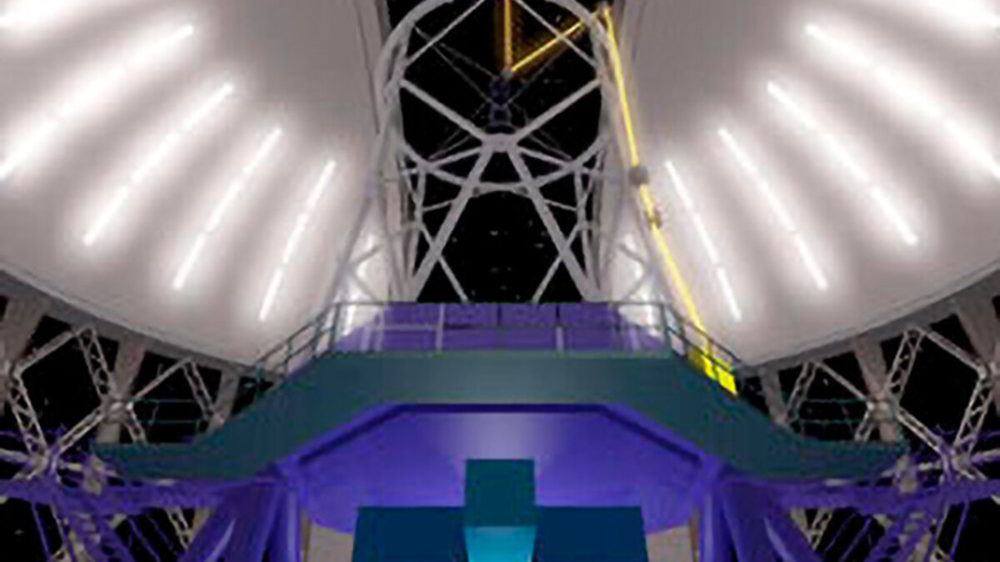
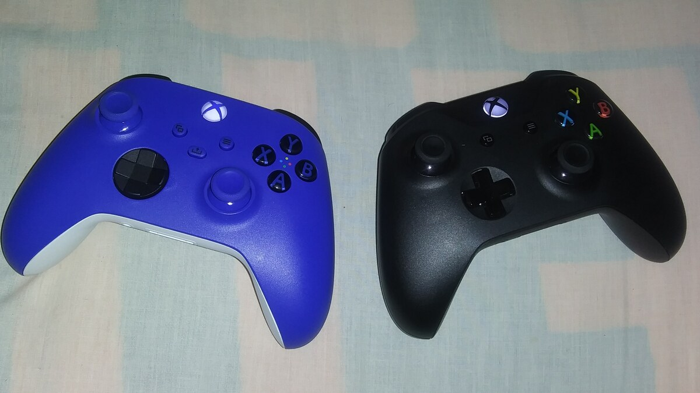

A Microsoft anunciou o Maia 300, a terceira geração de seus chips customizados voltados para o processamento de modelos avançados de inteligência artificial. Segundo apuração da agência Reuters, a companhia planeja iniciar uma implantação expressiva do hardware a partir de 2027, com metas que contemplam mais de um milhão de unidades instaladas em sua malha global de data centers ao longo dos próximos anos.
Desenvolvido especificamente para cargas de trabalho de alta densidade computacional — como raciocínio lógico em múltiplas etapas, geração de código e atendimento aos serviços da plataforma Azure —, o chip adota uma arquitetura modular baseada em chiplets. Essa abordagem permite combinar blocos de silício fabricados em nós litográficos distintos, otimizando o equilíbrio entre consumo elétrico, custo de fabricação e taxa de transferência interna de dados.
De acordo com dados divulgados pela Microsoft, o Maia 300 pode entregar até 40% mais trabalho útil por megawatt do que sistemas alimentados pelas principais GPUs comerciais de referência do mercado. Contudo, relatórios independentes salientam que esses números partem de benchmarks internos da própria empresa e que a lista completa das configurações comparadas não foi detalhada publicamente.
O movimento consolida a tendência das grandes corporações de tecnologia de projetar silício proprietário para aliviar a dependência de fornecedores externos e mitigar custos astronômicos de infraestrutura. Isso não significa que a Microsoft deixará de utilizar processadores gráficos de parceiros como Nvidia e AMD, mas confere flexibilidade estratégica vital em um cenário onde a demanda por capacidade computacional segue em patamares recordes.
🔗 Fontes e Referências Oficiais Consultadas
🧭 Outras Notícias Recentes
Acompanhe outros acontecimentos e descobertas verificadas no portal.
Reguladores intensificam fiscalização sobre o uso de inteligência artificial no setor bancário
Autoridades financeiras nos Estados Unidos e Europa investigam governança de modelos autônomos, auditoria de decisões e resposta a incidentes cibernéticos.
Ler notícia
TECNOLOGIAStartup capta US$ 88 milhões para acelerar conexão entre chips de IA usando luz laser
A Volantis desenvolve interconexões ópticas com lasers VCSEL para conectar processadores a dezenas de chips de memória, superando gargalos elétricos tradicionais.
Ler notícia
GAMESGears of War: E-Day retorna às origens da saga e chega aos jogadores de Xbox e PC
Novo capítulo revive o Dia da Emergência sob a perspectiva de Marcus Fenix e Dominic Santiago, marcando o retorno às raízes do combate tático.
Ler notícia